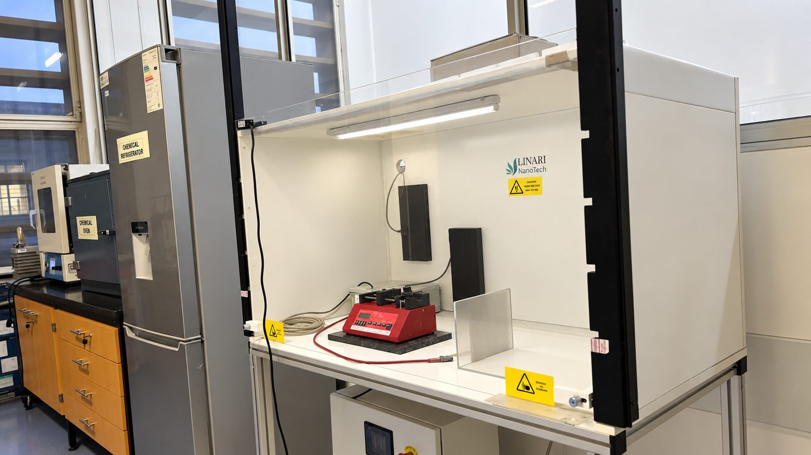
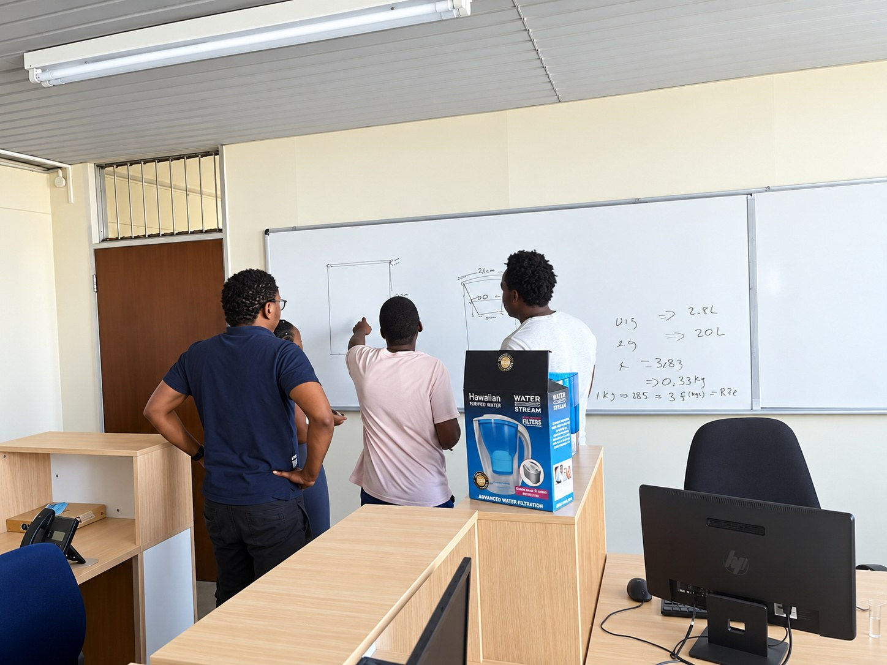
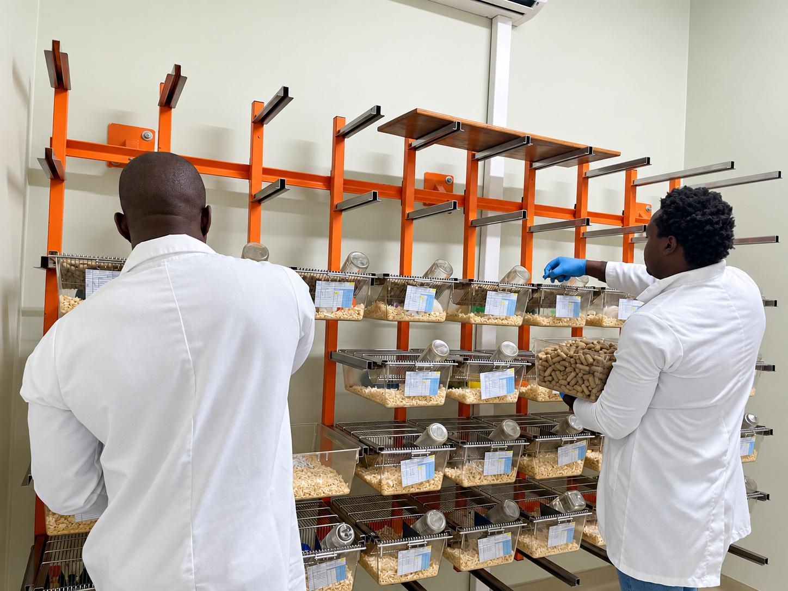
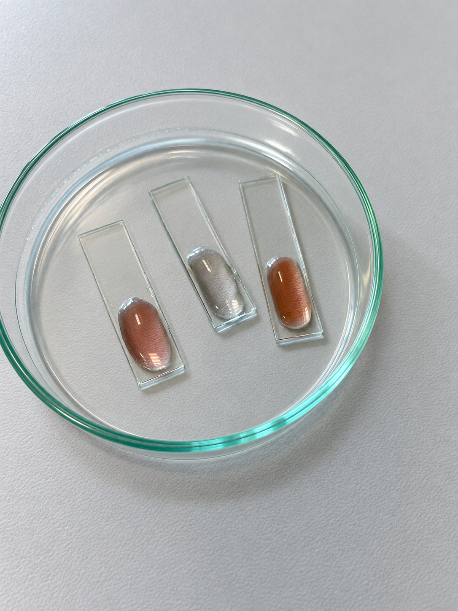
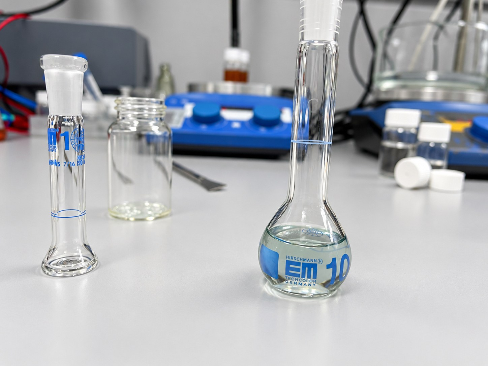
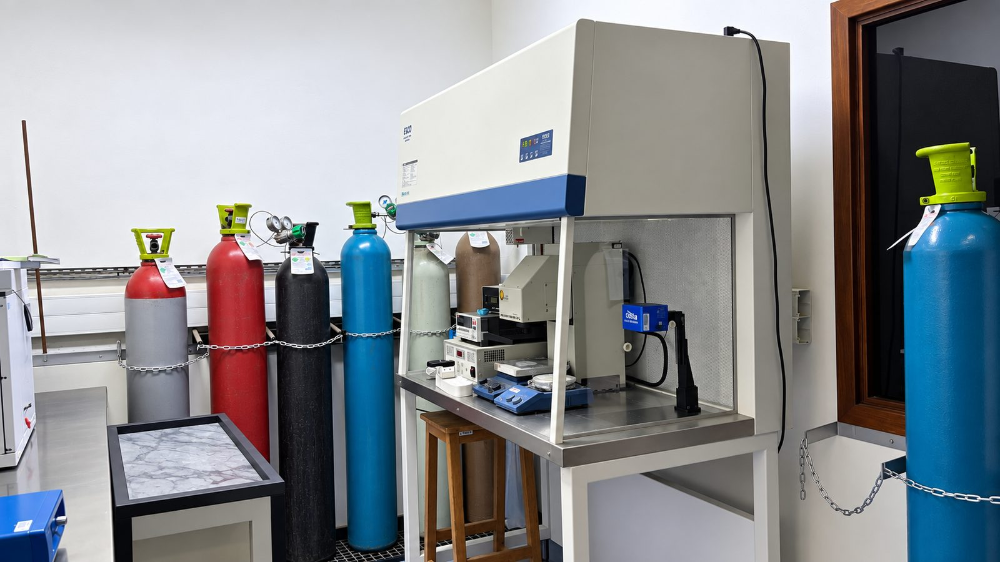

Bridge the gap between innovation and commercial opportunity.
Helping entrepreneurs, researchers and businesses develop clear, credible and fundable strategies for growth.
 Start a Conversation ↗
Start a Conversation ↗
OneBillionth Technology works at the intersection of science, innovation, sustainability and commercialisation, helping clients move from technical potential to practical application and market opportunity.

OneBillionth Technology is a specialist innovation, research and development, funding and commercialisation consultancy. We work at the intersection of science, technology, business and sustainability, helping clients move from technical potential to practical application and commercial opportunity.
Our team understands that a great technology is only one part of the innovation journey. Progress also depends on validation, intellectual property, funding pathways, commercial models, regulatory considerations, scale-up and routes to market.

Helping entrepreneurs, researchers and businesses develop clear, credible and fundable strategies for growth.
Supporting technology-driven businesses in transforming ideas into sustainable enterprises and real-world impact.
We combine scientific understanding with business and commercial thinking so technical value is never lost in the business case.
OneBillionth works across laboratory, product-development and project-planning settings where scientific evidence, technical feasibility and commercial direction are developed together.
These environments support concept validation, materials research, process development, proof-of-concept work and the technical evidence required for funding and commercialisation decisions.




Our multidisciplinary R&D experience allows us to engage with the science behind an innovation, assess what still needs to be demonstrated and help define a credible pathway toward implementation, funding and market readiness.